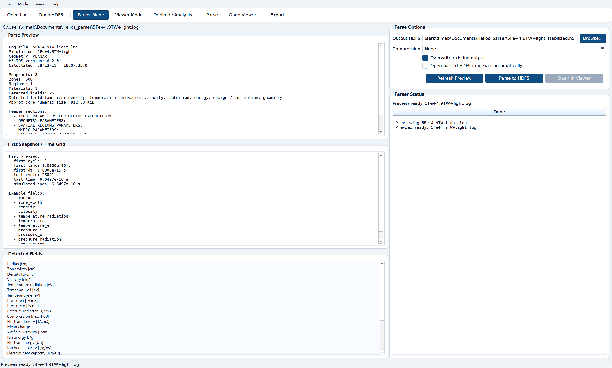
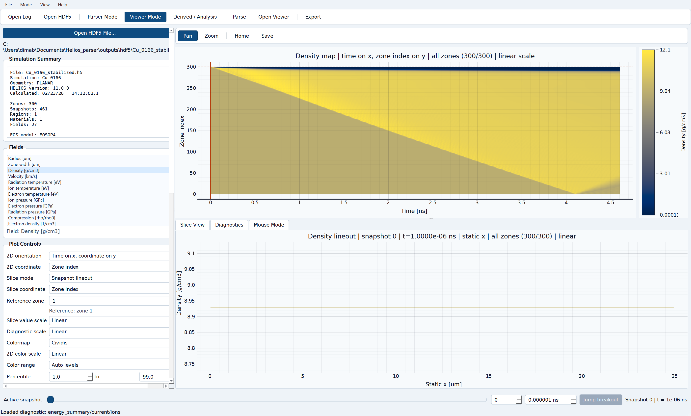
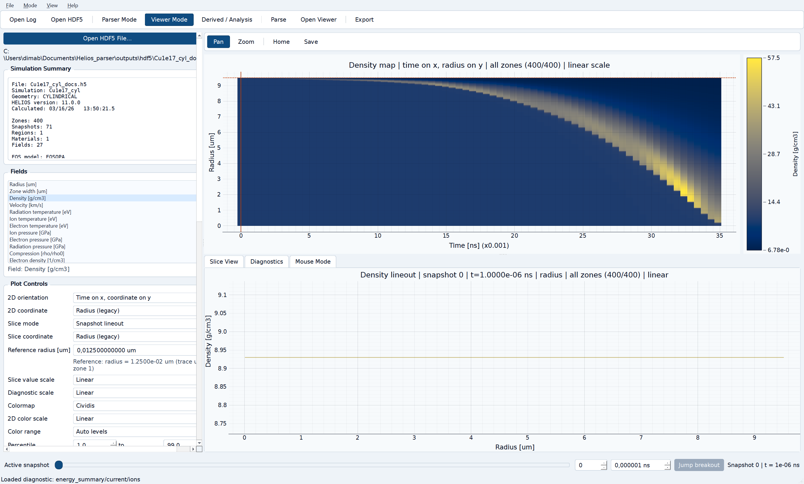
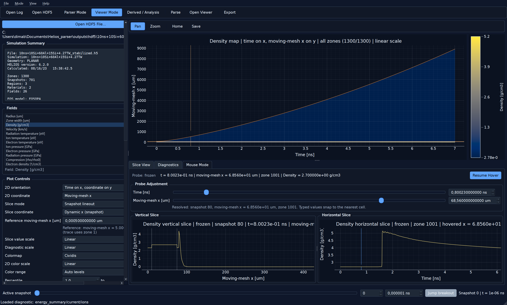
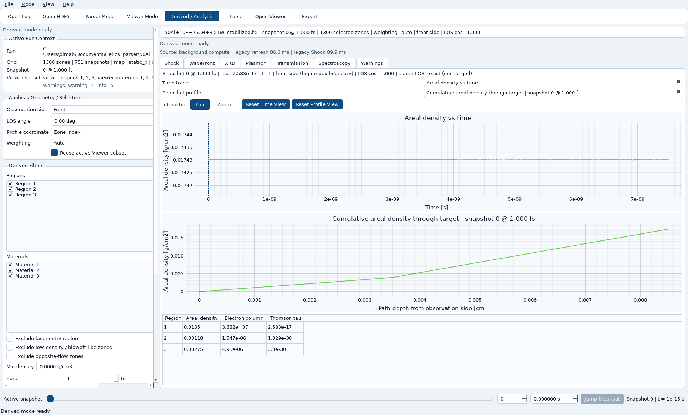
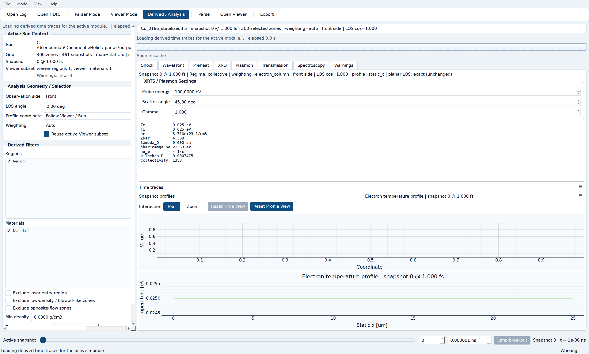

Quick start
- Open a HELIOS
.login Parser mode or a stabilized.h5file directly. - Use Viewer mode to inspect geometry, field maps, lineouts, and region/material boundaries.
- Switch to Derived / Analysis for fast legacy Shock. Open WaveFront or Preheat only when you need advanced diagnostics.
Parser mode
Parser mode previews HELIOS logs and writes stabilized HDF5.
- Fast preview gives snapshot count, geometry, field list, and approximate data size.
- Malformed numeric tokens are normalized only when needed.
- A damaged final block is dropped without discarding earlier valid snapshots.
- Run status is preserved as
completed,aborted,truncated, orunknown.
{kind=link}

Viewer mode
Viewer mode is the main field-inspection environment. The reader already exposes center and edge coordinates explicitly, and the viewer uses them consistently:
- maps and moving-mesh geometry use edges
- lineouts and probes use zone-centered values
- planar runs use
x; cylindrical runs useradius - boundaries are drawn on true edges
{kind=link}

{kind=link}

{kind=link}

Derived / Analysis mode
Derived mode follows the active run and, by default, the current Viewer subset. It is where the app separates fast and advanced diagnostics.
| Tab | Role | What to expect |
|---|---|---|
| Shock | fast legacy quick look | opens first, gives position/speed/breakout quickly |
| WaveFront | advanced multi-branch wave tracking | lazy, cached, and heavier on first open |
| Preheat | target conditioning before shock entry | lazy, cached, region-of-interest aware |
| XRD | compression-oriented quick look | lazy module traces and profiles |
| Plasmon | XRTS / plasmon regime quick look | lazy module traces and summary metrics |
| Transmission | model-aware attenuation panel | selected-mode traces and snapshot profiles with optional cold-material XCOM path |
| Spectroscopy | Doppler / broadening quick look | lazy traces and snapshot profiles |
| Warnings | analysis caveats and quality notes | read this whenever outputs look suspicious |

WaveFront
WaveFront is the advanced branch tracker. It is separate from legacy Shock and only computes when you open it or when its result is not already cached.
- Primary branch views show the tracker-selected primary compressive branch.
- Branch position / evidence / speed / width help inspect branch evolution.
- Interface-event summary shows wave-interface outcomes, ambiguity, support, pressure impulse, and diagnostic transfer quantities.
- Warnings / suppressed detections explain why some branches are provisional, weak, or hidden from default views.


Support and significance labels
- Provisional: fewer than 3 supporting samples. Not shown as a meaningful tracked branch by default.
- Short / weak: enough support to show as a weak branch, but not as trustworthy as a tracked branch.
- Tracked branch: the default branch class for main WaveFront plots and tables.
Significance is not the same thing as local fit confidence. A one-sample spike may have a sharp local score but still be low-significance as a physical branch.
Preheat
Preheat is a separate advanced tab. It evaluates target modification before the primary compressive branch enters the selected region of interest.
- Choose Auto guess or override the region of interest manually.
- Use Before shock entry mode for pre-entry offsets, or Manual snapshot / time mode to inspect any snapshot directly.
- Review target-entry timing, onset markers, affected depth/fraction, energy/source budgets, and notes on what could or could not be measured.

XRD, Plasmon, Transmission, Spectroscopy, and Warnings
{kind=link}

{kind=link}

- XRD: useful for quick compression-oriented trend inspection, not a full crystallographic solver.
- Plasmon: regime-oriented XRTS quick look, not a complete scattering calculation.
- Transmission: now supports explicit mode selection for
Auto hybrid,Thomson,Free-free,Free-free + Thomson, andXCOM. It remains a quick-look attenuation workflow rather than a full opacity package. - Spectroscopy: useful for broadening/shift intuition, not line-formation physics.
- Warnings: read this tab whenever geometry, filtering, branch support, or interpretation quality may be limiting the result.
How to read Transmission now
- Mode controls which transmission result is computed and shown, not just a label.
- Requested vs Applied tells you whether the selected result really ran or whether local fallback was needed.
- Source should tell you whether cold-material attenuation came from the live XCOM backend, the precomputed fallback table, or a further fallback path.
- Photon energy units can be entered as
eV,keV,Angstrom, ornm; the UI converts the displayed value rather than silently reinterpreting it. - Region table shows separate Thomson, Free-free, XCOM, and total tau contributions plus regime fractions, so you can see what part of the selected LOS is actually being treated by which model.
Interpretation examples
Legacy Shock for quick inspection
If you only need a fast estimate of front position, speed, breakout, or crossing times, stay on Shock. It is intentionally lighter than WaveFront.
WaveFront for advanced branch analysis
If legacy Shock and WaveFront primary differ slightly on a simple case, that is acceptable. WaveFront is a multi-cue tracker, so it should be comparable, not identical.
Interface-event interpretation
Treat interface-event transfer fractions as diagnostic and conditional. If the UI flags ambiguity or overlap, trust the warning and avoid overclaiming a clean split.
Preheat interpretation
Use Preheat to answer whether the target changed before main shock arrival, how deep the change penetrated, and which source terms plausibly contributed. The residual budget is not an error term; it is honest unclosed remainder.
Troubleshooting and expectations
- If Derived opens and Shock appears quickly but WaveFront is still empty, that is expected. Open WaveFront to trigger advanced tracking.
- If a heavy advanced tab is running, the busy/progress bar and elapsed status text should remain visible.
- If small crossing times no longer show as
0.000 s, that is intentional. The UI now uses adaptive units and scientific formatting for tiny times. - If a branch is missing from the default WaveFront view, check whether it is provisional or short/weak rather than assuming the tracker ignored it.
- If Preheat does not show a meaningful result, check whether a reliable primary compressive branch and target-entry time were available for the selected region.